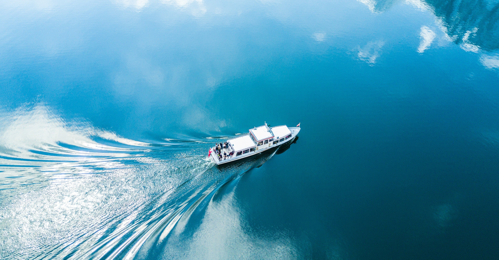
潮の匂いに満ちた海風が吹いている。
港町に生まれた僕の友だちは、ずっと昔から青々とした海だった。
母はピアノを習わすことに熱心だったけど、僕は小さなウクレレを持って誰もいない灯台の下で好きな歌を弾くのが好きだった。それを、自由に飛び回るカモメや、遠くに見える家々や、気まぐれな波の音に披露することが楽しかった。
そんな僕を褒めてくれたのは、いつも父だった。
「世界は楽しんだ者勝ちさ。それを忘れなきゃ、人間はどんな荒波でも乗り越えていけるんだ」
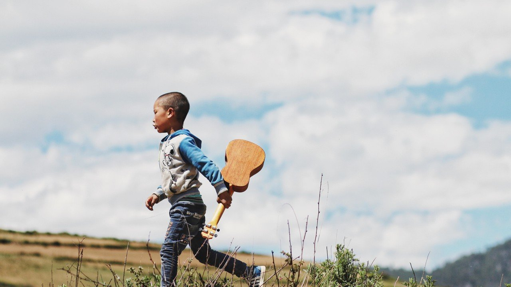
その父が漁に出たきり戻ってこなかったのは、僕が七歳になったばかりのことだった。
母は父の漁師仲間に捜索を頼んだけど、何日探しても父は見つからなかった。やがて「鮫に喰われた」「遠い海で嵐に飲み込まれた」などといった根も葉もない噂が立ち始めた。町の人たちは僕を見かけると一様に哀れんだ瞳を向けてくる。
次第に僕たち親子は町にいづらくなり、ついに母は町を出る決意をした。僕は父のみならず、生まれ育った港町まで失うことになった。
でも、母は明るく言った。「お父さんと同じように、私たちも船に乗って海に出るのよ」と。
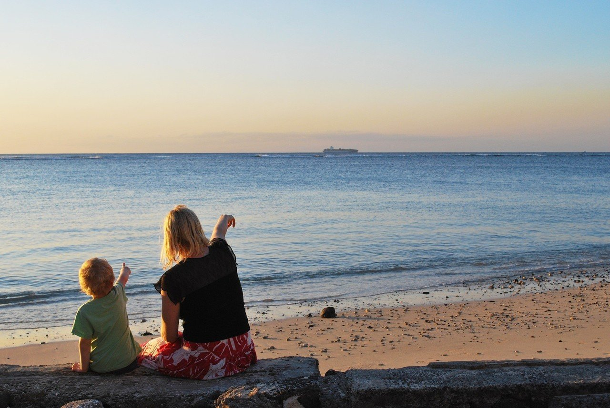
町で過ごす最後の日はあっという間にやってきた。
黄昏を迎える空を小さな窓から覗き見る。外からはいつも以上に騒がしい声がしていた。それが気になって、母が明日の支度をしている隙を見て、僕はウクレレだけを持って家を出た。
朝は魚のセリで賑やかな市場は、夜が始まる頃には漁師たちが酌み交す酒の臭いで充満する。
すでに赤い顔をして熱心に話す大人たちに聞き耳を立てていたら、どうやら父が乗っていた船がこの町のどこかに打ち上げられていたというのだ。
知らない間に走っていた僕は、市場を潜り抜けて海辺に出た。すると、そこには町に暮らす人たちが父の船を探している姿があった。
船の発着場には、たくさんの大人たちでごった返していた。そこには騒ぎを聞きつけたのか、母の姿もあった。遠くからでも、母の目には涙が浮かんでいるのが見えた。
そこにいる大人たちの中で、ただ一人、母だけが船ではなく父を探していた。
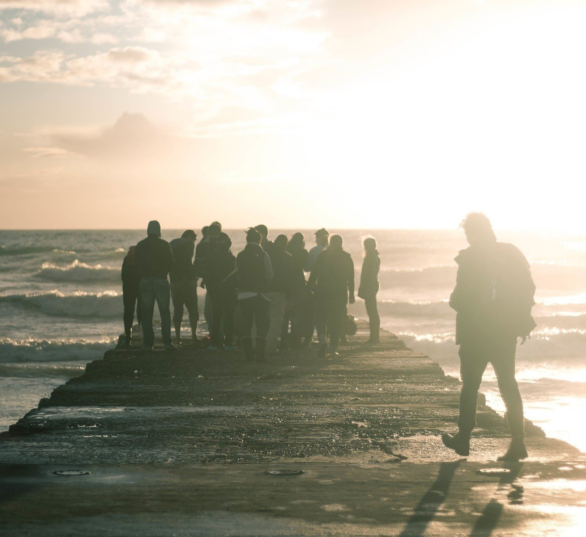
そんな所に父の船はないことを僕は知っていた。僕は涙を拭いながら灯台の元へと駆け出していた。
息をするのも忘れるほど、懸命に走った。石に躓いたせいで膝にできた傷は僕を追い込んできた。それは町の人たちと同じような顔をしていた。
否応なく込み上げてくる涙を拭うこともやめて、僕は再び走り始める。
町が騒ぎの中でも、灯台は変わらず僕を出迎えてくれた。
ゆっくりと地べたに座り、乱れた息を整えて灯台を見上げる。たとえ強い風が吹いたとしても、彼は微動だにもしない。その姿を見ていたら、さっきまでの胸騒ぎが嘘のように落ち着いてきた。
やがて、僕は灯台に歌いかけるようにウクレレを弾いた。弦の張りを確かめるように、一つ一つ丁寧に指を動かす。
空はすっかり暗闇に包まれていたけど、灯台が放つ光のシグナルのおかげで海と僕は迷子にならないで済んだ。心で感謝を伝えながら、僕は灯台に向けてウクレレを弾き続けた。
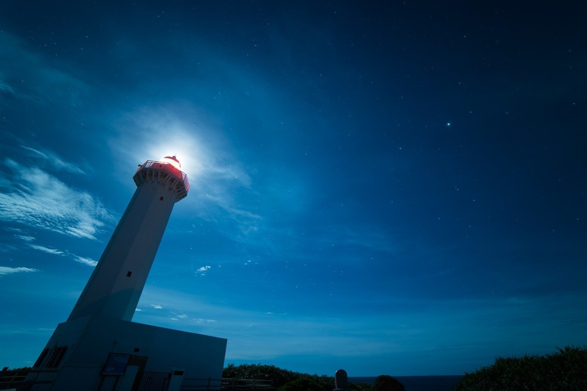
「君がいてくれたら、お父さんも町に戻ってこられたのかな」
自然と口にした思いは静かな波の音に飲み込まれていく。ウクレレの音色も元気をなくすようだった。ウクレレを褒めてくれる人が、もうどこにもいないことが寂しかった。
隣岬にある小高い山をぼんやり見ている間も、灯台のシグナルは360度旋回を続けている。
港町を出て、ほかの町で暮らすイメージはどうしても湧かなかった。ここを離れてしまったら、父との思い出や灯台の下で弾くウクレレの音色まで忘れてしまいそうだった。
空を見上げると、月は雲に邪魔され霞んでいる。
僕もいつか海の男になりたかった。父の姿が小さく見えるくらい大きくなって、頼もしいと思ってもらえるような息子になりたかった。
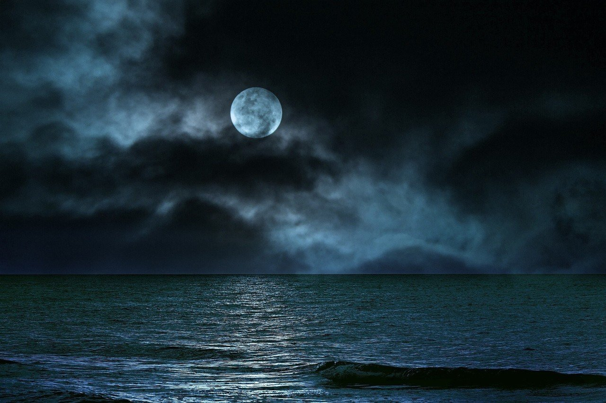
目を開けると、夜はまだ明けていなかった。
灯台が海風から守ってくれている間、僕は眠っていたようだった。
目をこすって灯台を見上げると、その光はいつからか回転することをやめて、ただ一点だけを照らしだしていた。
灯台がそんな風にシグナルを放つことを知らなかった。僕はその光の先へ向かうことにした。覚束ない足取りは、僕がどれほど長い時間眠っていたかを証明するようだった。
暗がりを照らす光の先には一艘の古い舟があった。
小さな波に揺られながらも、必死にその場所に佇もうとしていた。舟の中には小さなオールがあり、それは僕が手にするためだけに存在しているように思えた。
一歩ずつ舟に近づき、オールを掴んでみる。木の静かな温もりが伝わってくる。
「どんなに偉大な船乗りだって、最初は小さな舟から乗るんだ」
父が誇らしげに語っていた場面が自然と思い出された。
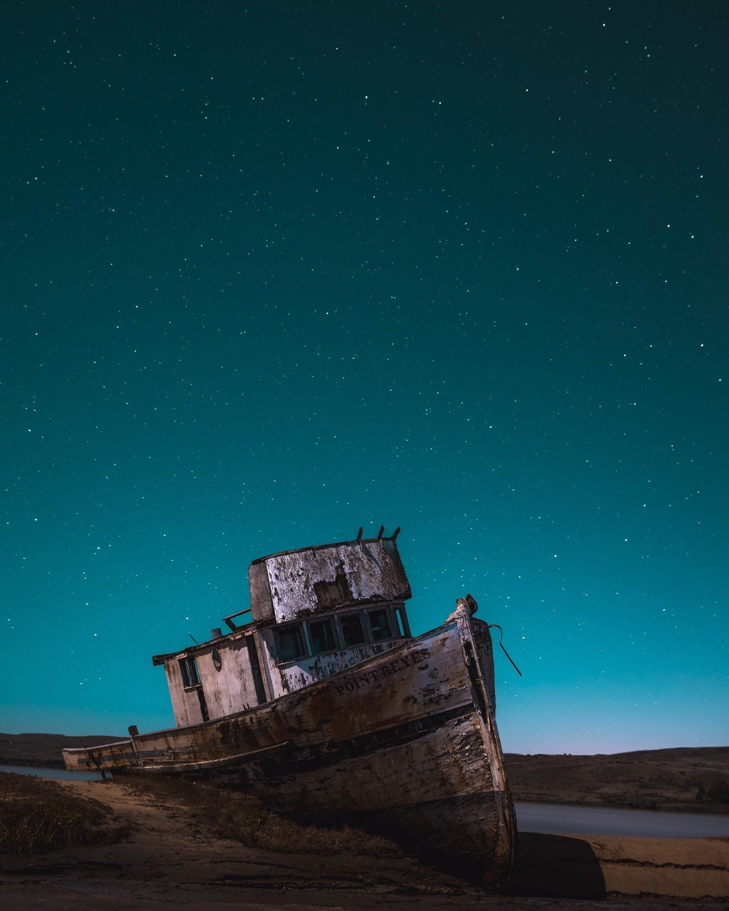
「俺とどこまでも行こう」
オールがそんなことを語りかけてきた。何が起こったのか、最初は分からなかった。まだ僕は灯台の下で眠っていて、変な夢を見ている最中なのだとさえ思った。
しかし、目の前にいるオールは間違いなく生きているように喋っていた。
「お父さんを返してよ」
何とか口を動かしながら放った言葉は、自分でも驚くほど強い口ぶりだった。
すでに僕は泣きじゃくっていて、オールを何度も叩いたりした。母の前ではいい子にしていたせいなのか、父がいなくなった寂しさをオールにぶつけていた。
オールは僕の言葉を受け止めながらも俯いていた。しかし、やがてめげずに顔を上げた。
「お前の父親が夢見た世界をお前にも見せたいんだ。俺にはそれしかできないから」
そんな風にあまりにも真剣な表情をするオールに、僕は最終的に根負けする形でその言葉に頷いた。
今にも崩れ落ちるのではないかと思うほどボロボロな舟に乗り込んだ時、僕も父みたいに海の中で死んでしまうのではないかと思った。でも、一度言ったことを退くことはできない。それは「一度言葉にしたら、何があっても成し遂げる」が口癖だった父の教えでもあった。
僕の体重が小さな舟を大きく揺らす。手にしているオールを水面に入れ、慣れない手つきで海の水を切ってみる。想像以上の重さが腕を引きちぎるように圧しかかってきた。
「波に身を任せるみたいに漕ぐんだ。ほら、こうやって」
するとオールは独りでに動き始めた。その動きによって腕は自由を奪われたが、僕は懸命にオールの言った通りに水を切ってみた。波と同じ方向にオールを動かす。運命共同体のウクレレも精一杯応援してくれている。
徐々にコツを掴み、小一時間ほど経ってみると、腕はすっかりオールの動かし方を習得したようだった。
舟の推進力はぐんぐんと勢いを増し、気づくと僕たちは町の見えない、一面海に囲まれた場所までたどり着いていた。
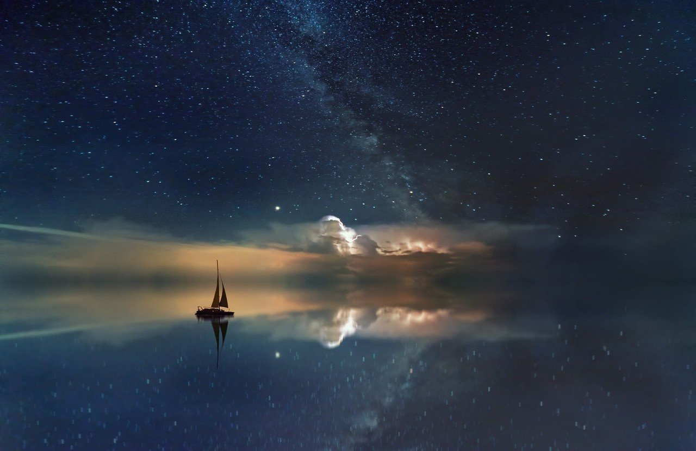
海面は頭上に照る星々の輝きで光っていた。初めて見た海の表情がそこにあった。
「きれい」
そう呟くと、オールは顔なんてないのに、ニッと笑って見せてきた。それにつられ、僕も口を大きく開けて笑った。
さっきまで僕たちの間にあった緊迫感は、この大きな海が全部洗い流してくれていた。
「ウクレレを弾いておくれよ。その音色を聴きたかったんだ」
その頼みに応えようと、オールと交代するようにウクレレを手にしてお気に入りの歌を弾いた。
オールは夢中になる僕を見守るように聴いていた。ウクレレの音色に夜空も星も海の生き物たちも、みんな同じようにハミングしていた。
やがて、オールは優しくも力を込めて言った。
「俺がお前の灯台代わりになってみせるさ」
夜が明けると、僕たちの世界旅行が幕を開けた。
最初は不安でいっぱいだった僕を「どんな困難も、いつか笑い飛ばせるようになる日がくるんだ」と一蹴したオールの言う通り、今では見事に笑い話になった。旅の苦労よりも、旅で得た喜びの方が断然記憶に焼きついている。
本でしか知らない国々の暮らしが海からでも垣間見え、初めて見る汽車や雲に届きそうなほど高い建物が心を弾ませる。華やかで目を瞠るほどの文明。そのどれもに心を奪われた。
生きていくための食糧や寒さをしのぐ服は、初めて降り立つ町で出会った人たちがくれたものだった。
言葉が通じなくても心が通った時の嬉しさは何ものにも代えがたい経験になった。
旅の中でも、オールは大切なことをたくさん教えてくれた。
大きな海の上で、小さな舟の中で、言葉で、態度で、時には心で生きることを教えてくれた。
そのたびにオールはウクレレの演奏を聴きたいと僕にせがんだ。
「これを聴きたくて、お前に色々教えてやってるだけさ」
オールは気恥ずかしそうに鼻をかきながら話す。
「素直じゃないんだから」
僕もオールと話すことに慣れたように返事をする。僕たちは形容しがたい不思議な絆で結ばれていた。
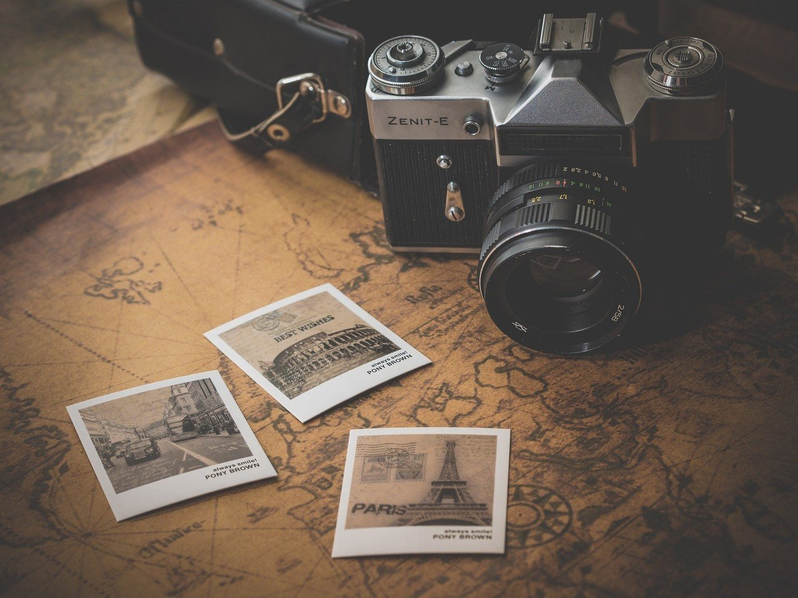
10年の歳月が経った頃には、地球上に広がるほとんどの海を渡っていた。
どこにも行く当てがなくなりかけた時、オールがどうしても訪れたいという場所に向かうことにした。それはイタリアのヴェネツィアだった。
美しい水の都には、たくさんの船が行き来していた。華やかな町の水面に、たとえ僕たちの舟がみすぼらしく映ったとしても、誇らしげな気持ちは決して忘れなかった。名もなき小さな港町から出発し、世界中の海を渡り歩いてきたんだ。オールと舟とウクレレが、その証人だった。
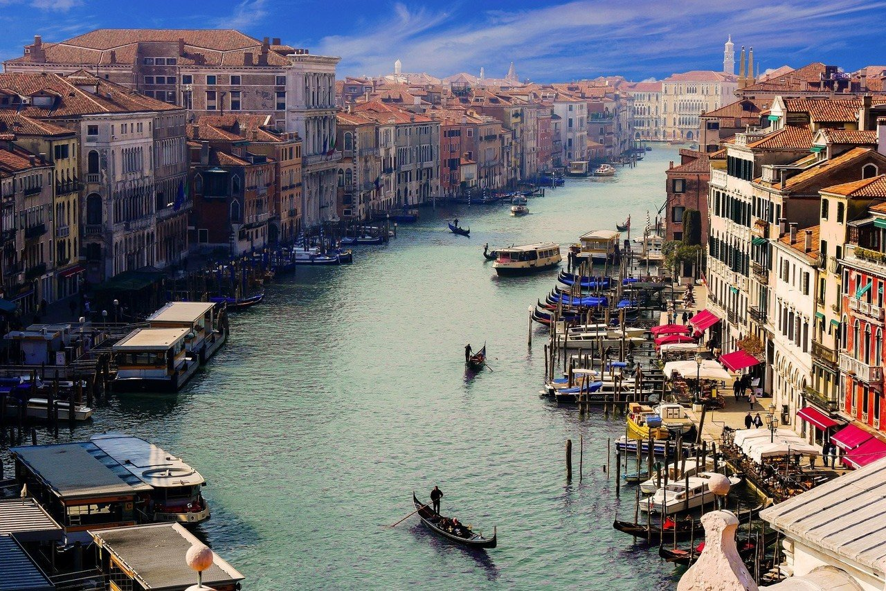
ヴェネツィアでは人間と海が共存する暮らしぶりが見て取れた。
町を縦横無尽に駆け回る水上バス。潮風が乾かす洗濯物。水上での生活を楽しむ町の人たち。かつて暮らした、あの港町の風景が蘇ってきた。
「ここでお別れさ」
その口調は、毎日交わす挨拶と何ら変わらなかった。水筒に入れてある、最近飲めるようになったブラックコーヒーも急激に温度を失っていく。
僕は半ば強制的に町に降ろされた。手にしているウクレレも寂しそうにこちらの様子を窺っている。
「ここが俺の生まれ故郷なんだ」
オールがついた嘘はすぐに分かった。
「なんでそんなこと言うんだよ」僕はオールと出会ったばかりの頃みたいに騒ぎ立てた。
「この町で、今度は自分の力で大海原を渡ってみるんだ」
ふざけんな。そう言うのはさすがに子どもじみていると思い、口をつぐむ。
必死に涙をこらえてオールを見ると、ずるいくらい優しい表情でこちらを見ていた。
「最後にもう一度だけ聴かせてほしい」
ウクレレも頷いていた。涙を拭い、別れを惜しむように心に身を任せて弾き始めた。
指先が自然と奏でる音色は、初めてウクレレを弾く楽しさを知ったボサノヴァだった。
気づくと周りには人だかりができていて、オールも嬉しそうに手拍子をしていた。僕も自然と笑顔になる。「ありがとう」と小さな声で言っていた。
やがてオールは舟とともに海を出た。僕は最後までその姿を見送ると決めていた。
港から舟が出ると、誰かがその舟に乗っていることに気がついた。姿勢がよく、気品にあふれ、海を尊敬するその後ろ姿は、紛れもなく父のものだった。
「お父さん！」
僕は人目もはばからず、何度も大きな声で父を呼んだ。でも、父は一度も振り向いてはくれなかった。ただ目の前に広がる海だけを見つめていた。舟が見えなくなりかけた瞬間、父は手を上げて僕に応えた。
お前は変わることなく、お前の道を行け。
父はそう言っていた。
そうか。父は死んでなんかいなくて、ウクレレに夢中な僕を羨ましがって海の旅に出たんだ。
その時に吹いた海風は、確かに生まれ育った港町と同じ匂いがした。
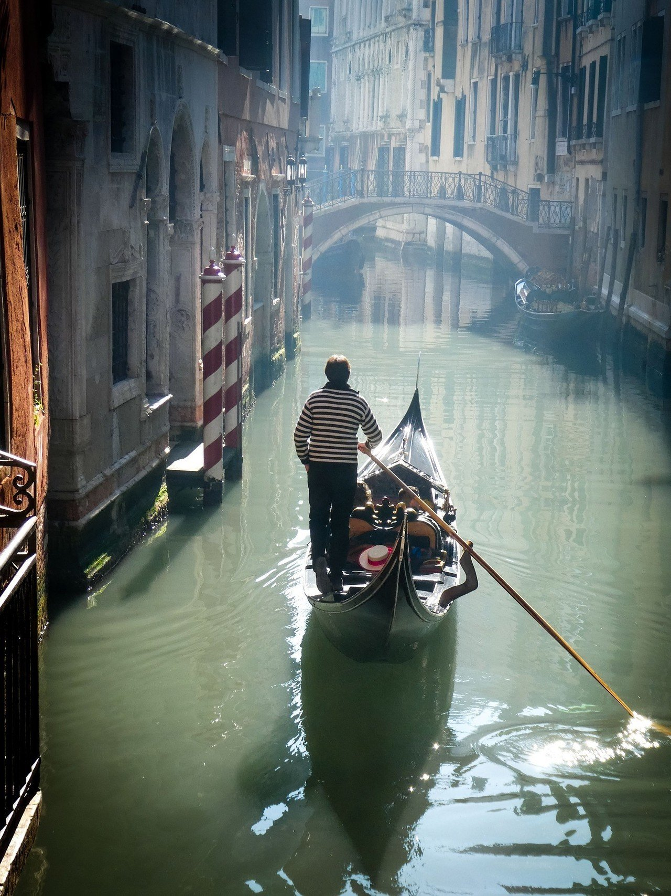
やがて、僕はヴェネツィアでウクレレ弾きになった。
最初は慣れない土地での生活に四苦八苦したけど、今までオールに教えてもらった生きる知恵を何度も胸のうちで反芻しながら乗り越えていった。
生活が落ち着いた頃、母に手紙を送ったら返事が返ってきた。やがて母をヴェネツィアに呼んだ。涙ながらの再会を果たし、世界を旅した10年の思い出話をした。母は穏やかな表情で、その一つ一つに耳を傾けていた。
「この町で、私はお父さんと出会ったのよ」
母は言った。もしかしたら父の魂が僕をここまで連れてきたのかもしれない。そう気づいた時には、僕は20歳になろうとしていた。
その頃のウクレレはというと、路上での演奏の時に投げかけられたブーイングやヤジに悩まされていた。
ピアノもバイオリンもマンドリンもイタリアで完成された、いわば音楽の本場のような国ではウクレレの肩身は狭かった。
しかし、ある日いつものように路上で演奏していると、ある女の子が僕に拍手を送ってくれていた。
その日はクリスマスイヴで、寒さに凍えながら弾いていたんだけど、その子の姿を見ていたら一瞬にして体のうちから温かくなった。そして、楽器の種類や人種の壁や生活の困難さえも越えて、純粋に拍手を送り続ける彼女を美しいとさえ思った。
やがて僕はその人と恋に落ちた。若い父と母が過ごしたこの町で、僕は大切な人と結ばれた。
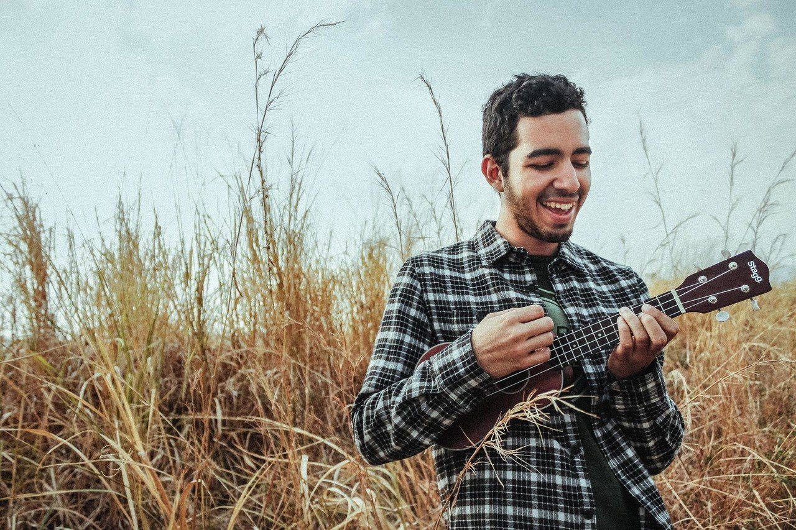
「そして、君が生まれてきたんだ」
ここまでの話を大きな瞳で聞いていたのは、まだあどけなさの残る少女だ。
「わたし、まだ子どもだけど、えほんのはなしとほんとうのはなしがちがうことくらい、わかるよ」
目の前にいる少女はそう語りかけた。口元は穏やかだが、瞳には疑いの色が濃く滲んでいる。
「わたし、お父さんがいないとさびしいしウクレレもひけない。これからどうしたらいいのかわからないよ」
そんな健気な疑問を向けられたら、僕もなんて答えたらいいのか分からなくなった。
まさか、ある夜に海辺を散歩していたら、あのボロボロな舟とオールがやってきて「久しぶりにウクレレを聴きにきたんだ」と言って僕を舟に乗せたことや、あの頃と同じ懐かしい気持ちで海の上で弾いてみせたら、いつの間にか自分自身がウクレレになっていたことなんて、口が裂けても言えやしないだろう。
それに、こんな可憐で純粋な少女を残していくなんて、まるで僕は父親失格ではないか。
「大丈夫。僕が君の灯台代わりになるよ」
やはりウクレレの姿では説得力がないのか、そんな言葉もむなしく少女の目元は大粒の涙を湛えている。
僕は尚更どうしようか悩んだが、やがて懐かしい口調を真似てみようと閃いた。
ウクレレしか取り柄がないのに、不覚にもウクレレになってしまった大人が愛しい娘に言えることなんて、僕にはこれしか思いつかなかった。
そして、この言葉だけが、僕が経験した唯一の冒険の証だった。
「世界は楽しんだ者勝ちさ。それを忘れなきゃ、人間はどんな荒波でも乗り越えていけるんだ」
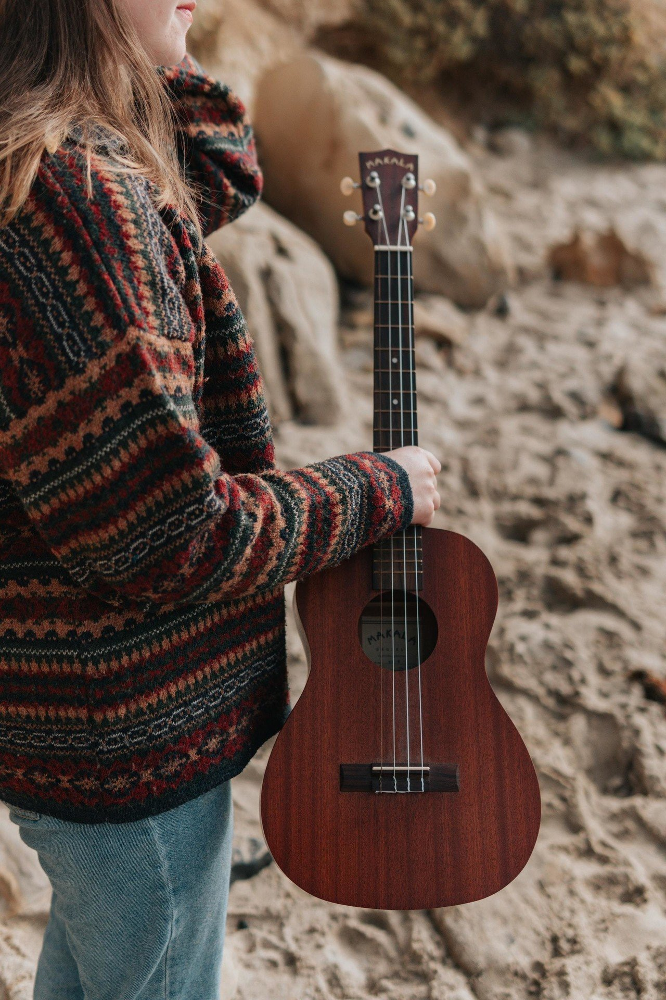